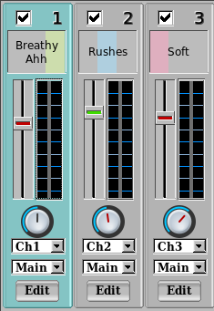

Navigation through Yoshimi is done with a combination of windows, menus and buttons. If in doubt simply hover the mouse pointer over these and usually a tooltip will appear with additional information. In some cases you will get additional information just hovering over certain parts of windows.
All windows are resizable up to the screen size, and their positions and sizes will be remembered between sessions. With the exception of the Console window, they will also remain in scale, including all their contents.
The two views below show just how accurate the rescale is. This was on a 1920 x 1080 pixel display. We've reduced the images to save space, hence the slight blurring.

The Console window needs to be be resizable independently horizontally and vertically because you may want to see longer lines, or alternatively you may just want to see more lines. With this in mind, the text size will not scale with the dimensions. Instead there is an entry in Settings for this. It will be saved and restored over new sessions.
Key Shortcuts
Some menus and buttons have one letter in their name underscored. For these, if you hold down the Alt key then hit the key carrying that letter it will perform the same action as if you had clicked on it with the mouse. Once the menu is open you can change which entry is highlighted with the up/down arrow key, and 'Return' will perform that selection. Similarly, buttons with an undescored letter will be activated with the Alt/letter combination.
Bear in mind this is only true for the window that currently has focus, and sometimes you end up with none of Yoshimi's windows having focus.
Controls
All rotary controllers respond to mouse pointer drags that are an average of the vertical and horizontal movement, so you can drag from left to right, bottom to top, or even bottom left to top right.
Using the left hand button gives quite coarse control. With the middle button the control is finer and the scroll wheel also gives quite fine control without having to move the mouse itself. For all of these, if you hold down the Ctrl key at the same time, you will get much finer control.
The right hand button is an exception as a click on this will immediately set the control to its default value, and using the Ctrl key here will initiate a MIDI learn event.
Sliders behave in a similar way, although there is no difference between the left hand button and the middle one. Again, most of these can be learned.
Any check/tick box with a blue bold italic name text can be learned. These will be On if the incoming value is greater than 63, otherwise Off. The counters and spinboxes with blue bold italic text can also be learned and will give a scaled response to the incoming value.
Menus with blue bold italic are a bit strange, as you have to first click on them to open up the menu, then click the right hand button while holding Ctrl. The incoming value will again be scaled to the numeric menu range.
The final learnable type is any button with blue bold italic text. Some of these will take immediate effect while others are only next note.
In many places you will see a pair of small dark blue buttons marked 'C' and 'P'. These enable you to copy the entire contents of just that section and later paste it to either a Presets file or to another identical section. For example you can copy AddSynth Global in part 1 and then paste it to any other AddSynth Global engine, such as part 4 kit item number 7 AddSynth.

Navigation Aids
In current Yoshimi versions all sliders indicate that they are at the default position when the 'peg' has a green center, otherwise it will be red. Similarly, rotary knobs have a black pointer line when at the default, and red when moved.
Almost all of these controls have dynamic tooltips showing you what the current setting is. Also the default settings have been very carefully thought out - especially the ones deep in the synth engines so just enabling features can produce dramatic results.
Another enhancement is that we make a clear distinction between link buttons and action buttons.
Link buttons are rectangular and pale green. They don't change any settings, just take you to another window where there is usually an expanded group of controls. However, if the backgound is the same colour as the button should be, the button will be grey in order to maintain contrast.
Action buttons are rounded and pale blue. These are the ones that make immediate changes such as enabling a synth engine.
There is a third type that is used for Close and Cancel operations. These are sharply rectangular and grey. They don't normally make changes.
With all windows, the title bar has the Yoshimi name usually followed by the instance number if it's not the main one. Most of the windows also have additional information, such as what section/context they represent and from part level upwards you will see the current part number, instrument name and if it is a kit element the kit item number.


Yoshimi uses its own file manager, maintaining style consistency with everything else. The two views here are that of loading an Instrument patch, and the variation for setting and using 'Favourites'. The top text line on both of these views is a reminder as to exactly which file type you are dealing with.
In the example's first view, directories are at the top of the list with an appropriate icon. A double click on these will select that directory placing it in the Path field and rebuilding the list. You can also manually edit the path field to go to a known route, and on hitting 'Return' the list will be updated.
When saving files, you can add new directories here. You will get a popup request for confirmation, and then can save the file in the newly created one. This is also true when exporting banks, PadSynth sample sets, etc.
The Up button takes you back along the directory tree, or you can simply edit out one or more directory names and hit 'Return'.
After these are the files. Only files with a valid extension are shown - Yoshimi would in any case reject any others. A single click on these will place them in the Name field but will not actually load them, so you can edit this and then click on the Load button. Alternatively a double click will immediately perform the full action.
Clicking on the Add button will copy whatever is in the path field to the favourites list, and take you to that view. This can also be reached by clicking on the Show List button.
Note
The Path and Name fields along with the Up and Load buttons will change depending on what type of file is being managed. See below.
In the favourites view, the entries can be selected but are not directly editable. The currently selected path is highlighted in blue, and this one can be made the default. It will then be placed at the top of the list. Currently the maximum number of favourites is 20 - although most people only seem to set five or six.
Selecting one of these doesn't actually set the path field as you may be simply wanting to organise the list. Clicking on the Set button will do so and return you to the main filer view. Also, a double click on one of the items will set the path and return you to the main view.
Clicking on the Set button will always set the highlighted entry, so entering the view then immediately doing this is a quick way to set the default.
Each time Yoshimi is started, loading and saving external instruments will always offer the default location (as set here). At other times and with all other file types the most recently seen will be offered (unless the recently seen list is empty).
Instruments are special. If they are accidentally overwritten, there will be no way to recreate them exactly as they were. For this reason you will also see a warning message if you take any action that could destroy edited but unsaved instruments.
Typically:
Instruments in parts 2 5 21 44 have been edited. Still exit?
Or when loading a single instrument:
Instrument in part 7 has been edited. Overwrite?
Next (The Main Window)
Back to top